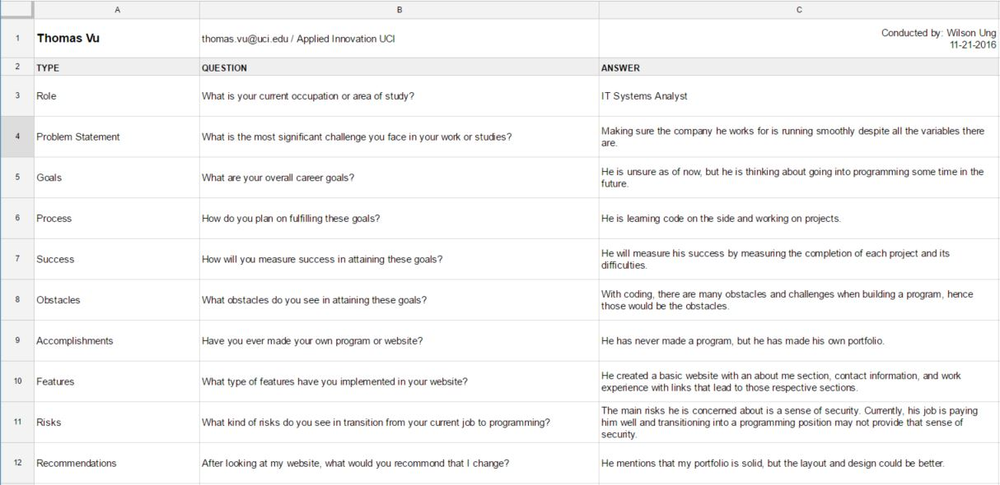
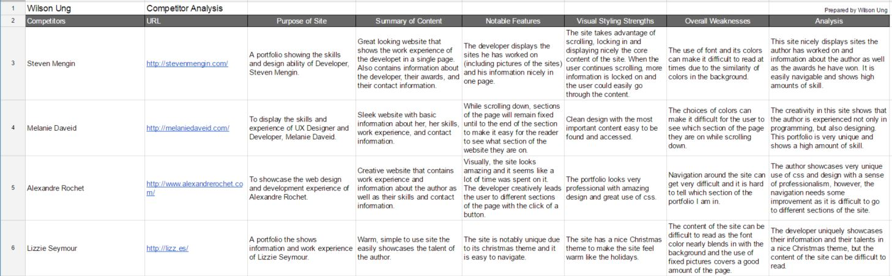
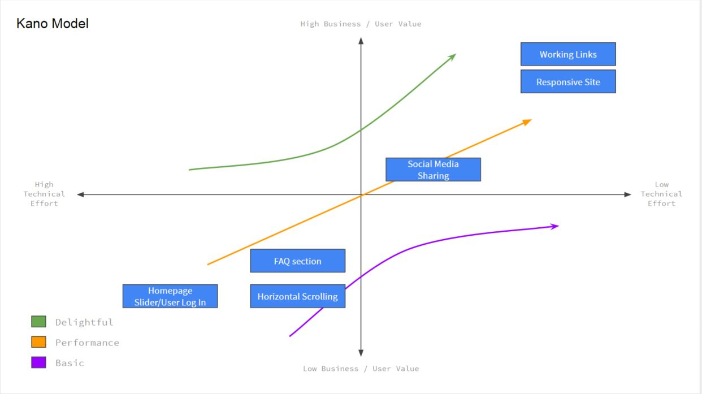
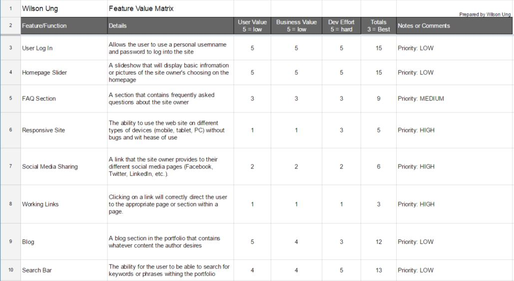
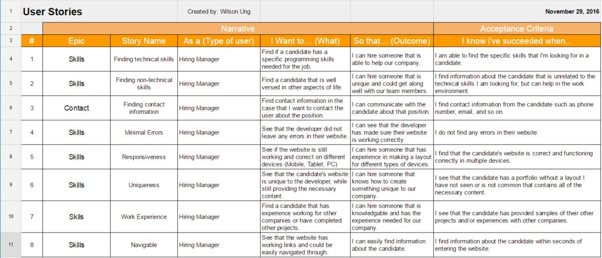
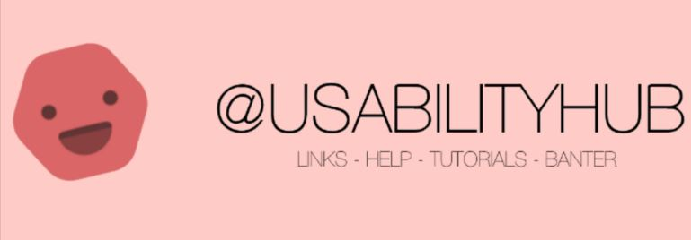

Wilson Ung
User Research
User Interviews
 A user interview of my co-worker, Thomas Vu. Here, I asked questions about his career, his goals, his thoughts about what a website should contain, and how I can improve my portfolio. I asked him because he has experience and is very knowledgable in this field of study.
View the User Interview
Competitor Analysis
 An analysis of four different portfolios from experienced developers. These portfolios were chosen because of its uniqueness and high display of skill.
View the Competitor Analysis
Feature Prioritization
A visual display of what features should be prioritized in the portfolio. This helps determine what features are important and not so important. It will help me decide which feature(s) are worth implementing in the future.
View the Feature Prioritization
Feature Value Matrix
This Feature Value Matrix shows a numbered value of which features that could be included in the website. A high number value means the feature is not very valuable and vice-versa.
View the Feature Value Matrix
User Testing
Cognitive Walkthrough

This Cognitive Walkthrough contains a bunch of questions prepared by myself about different features and functionalities of the website to get a outside perspective of how a user interacts with my site. I interviewed my co-worker, Thomas Vu.
View the Cognitive Walkthrough
User Stories
This section contains a series of "stories," or methods of interactions a user would go through to find information in the website. It is used to learn how the user navigates through the site and the type of content they are looking for.
View the Cognitive Walkthrough
User Test
For user testing, I have decided to use the Click Test and Question Test. I chose these tests because it allowed me to see if the user knew how to get to certain sections of my website and which aspects of the site is good versus which aspects need improvement.
View the Question Test results
View the Click Test results
Process in Conducting Research and Testing
The process in conducting the research and testing for my portfolio was relatively simple. For the User Research, I intereviewed my Co-Worker, Thomas Vu. The reason I interviewed him was because he has experience in web design and development so I feel like I could gain plenty of insight from him. Also, he was easily accessible and was willing to help me out in my research. For other parts of the research such as the Feature Value Matrix and so on, I simply looked through the internet for further insight and asked a couple of my friends what they would like to see in my portfolio and why.
For User Testing, I simple asked a few of my friends to take a quick survey for me. They were all willing to help so I was able to get insight from 10 of them. Also, for the Cognitive Walkthrugh, I asked Thomas again since he is knowledgable. However, I decided to ask a few friends to test out my website as well and to imagine that they were trying to hire me to see what they would look for in a portfolio. Scheduling meetings were simple as they were all available and helped out when they had the opportunity.
Summary of Findings
After completing the user research and testing, I have found that there are a few aspects my site can improve on. The main aspect is the design. As of now, my site could look more professional with a better design. Even though my site is unique, it lacks a professional sense which can be accomplished with some cleaning up. However, I have recieved notes that this is a solid starting point and I am not too far off from creating a nice, sleek portfolio. I have all the content a portfolio should contain, but now I need to update those information and elaborate a bit more on the content such as the programming experience.
Research and testing had a few challenges. One of them was creating questions for the interviews. Me being a novice developer, I did not know what kind of questions to ask to help improve my portfolio. I wanted to keep it general and open so that I could receive constructive feedback for improvements. Another challenge was making time for the interview. I was extremely busy the past month so finding time to set-up an interview with my friends and co-worker was fairly difficult. Luckily, they were all available the same time I was.
Incorporation of Findings
Although I have not incorporated any of my findings, I am planning to do so in the future. I want to have a nice, high-end portfolio for future employment opportunities. However, before I begin working on my portfolio, I want to begin learning more about coding and design. I feel like these aspects are important to create a better portfolio, so I would be starting with that. I want my portfolio to incorporate as much of my knowledge as possible in order to hopefully get hired in the future.
Besides learning about the development aspect of making a portfolio, I also plan to learn from others. There are plenty of great portfolios online, so it is of my best interest to take a look at those and gather ideas on how I can make a unique profile. In other words, I need to conduct another competitor analysis. So far, the main comments I received about my portfolio is the design. I do not know how to design just yet, so I want to learn how to before I dive into changing up my portfolio. Other than that, I have not received any comments on what changes I could make immediately or in a short amount of time, which is why I have not incorporated any of my findings just yet.